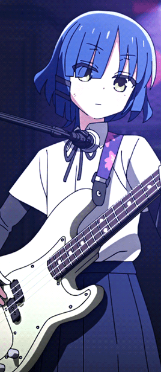
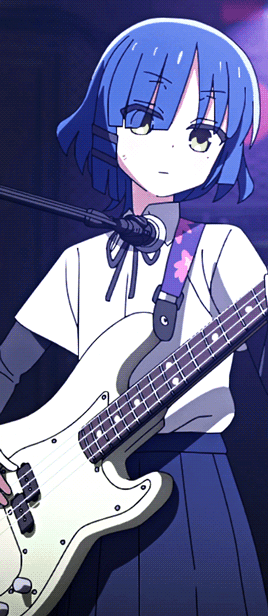
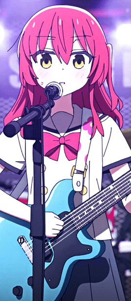
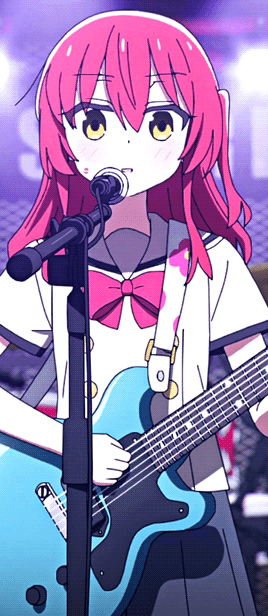

Bocchi the Rock!
Bocchi the Rock! teems with experimental animation that captures the social anxiety and catastrophizing the anime’s namesake character experiences. It’s a fun ride. Bocchi the Rock! follows the members of Kessoku Band: Hitari Goto (better known by her nickname Bocchi), Nijika Ijichi, Ryo Yamada, and Ikuyo Kita. Each of the girls fall into different psychological profiles. Bocchi is a neurotic introvert who uses lies to cover her insecurities. Nijika is a cheery extrovert and the glue of the band. Ryo offers another introvert, but she doesn’t suffer from social anxiety; she’s a loner but able to social just fine. Ikuyo rounds out as another extrovert, but unlike Nijika Ikuyo suffers from social anxiety. She’s not at the same level as Bocchi, but her anxiety and insecurities trouble her since she needs social interaction.
NEWS!!!
Bocchi the Rock Breaks Box Office Record With Recap Movie
In its opening weekend, the Bocchi The Rock compilation film, "Bocchi The Rock! Re:", pulled in around 180 million yen, which is the equivalent of a little over one million U.S. dollars. This marks the highest entry for an anime compilation film outside of Demon Slayer, which is especially impressive considering that the Demon Slayer Corps' films would routinely house new footage from the anime adaptation.
Bocchi the Rock Movie Shares New Trailer, Poster
Bocchi the Rock is coming to theaters with two new movie projects, and the movie has dropped a new trailer and poster for what to expect from its big comeback! Bocchi the Rock was one of the most successful anime adaptation debuts of 2022, and thus when it ended fans were immediately asking to see it return with a new season
Bocchi the Rock Secures #1 Album on Oricon 2023 Charts With "Kessoku Band"
Bocchi the Rock!‘s Kessoku Band has scored the #1 album of 2023 on Oricon’s Digital Album Ranking. This marks the first time a female group has ever topped this annual chart which ranks works by sales. The band members’ reactions to the success of the self-titled album are below:
 

Ryo Yamada
Bassist of the Band
Disparate personalities coming together is its own kind of music.
 

Ikuyo Kita
Guitar and Vocals of the Band
Gotoh-san is so good if she teaches me, I'll be able to do it!

Hitori Gotoh
Guitar and Lyrics of the Band
I don't wanna! I don't wanna work!! I'm scared! People scare me!!

Nijika Ijichi
Drummer of the Band
Feel free to call her weird! She likes it!